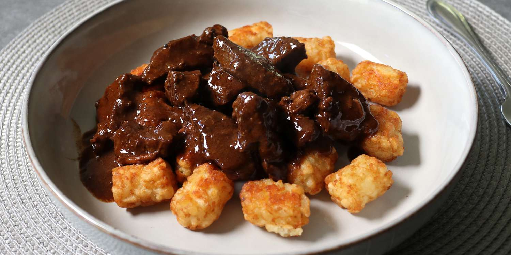

Beef Tips and Tots

Description
I'm going to show you this very old-school method of making beef tips.
Which, once made, can be used to top lots of things—but my favorite thing to top with tips is probably Tater
Tots.
Ingredients
- 1 ½ pounds beef round steak
- 1 teaspoon kosher salt, or to taste
- 1 tablespoon vegetable oil
Steps
- Taste beef tips and adjust the seasoning. Serve immediately over hot potato nuggets.
- Meanwhile, preheat the oven to 425 degrees F (220 degrees C).
- While meat simmers, bake potato nuggets in the preheated oven until crispy and heated through, 20 to 25
minutes.